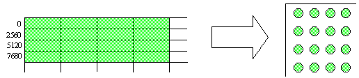
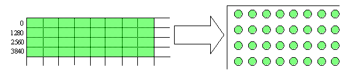
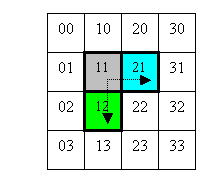
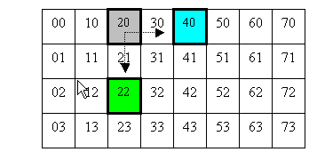
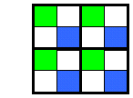
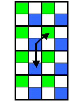

By Mike Abrash
The depth buffer is a major consumer of memory bandwidth. In fact, it generally consumes data at a considerably greater rate than the pixel buffer, because depth is accessed at least once for virtually every pixel, while the pixel buffer is accessed only when the depth-test passes. Even when every pixel is rejected by the depth test, the maximum fill rate of the Xbox pipeline is capable of demanding almost the entire available bandwidth of the Xbox® video game system from Microsoft—and then the fast occlusion culling circuitry can boost that demand by another four times. Demand doubles again if depth values are written as well, and doubles yet again, or even quadruples, for multisampling. Obviously, the bandwidth demands of the depth buffer can have a huge impact on overall Xbox performance.
Fortunately, the Xbox GPU custom-designed by NVIDIA® features some cool NVIDIA technology that can compress depth buffers losslessly—that is, without ever losing any depth information. However, there's a complication—depth values can be compressed only under certain conditions. In a little while, I'll cover exactly how compression works and when it can do its stuff, but since there are only a few important programming rules that emerge from the nature of the compression, let's cover those Golden Rules first.
One note: this paper is based on what I currently know about depth compression, and I have done a considerable amount of research to try to make sure the information is correct. However, it is far from certain that I got everything right, so if you get results that contradict this paper, you may well have found an error. Feel free to contact us with questions about such cases.
If there's only one thing you learn from this paper, it should be that the Golden Rules of Depth Compression for 32-bit depth buffers (these don't apply to 16-bit depth buffers, which have few complications) are:
I'll explain later why these rules exist, but for the moment just take them on faith: failure to observe these rules can cost you a third or more of your performance.
The first rule is easy to follow; just use
The second rule is even easier; after clearing the stencil buffer (preferably clearing the depth buffer at the same time), either don't write to it when you don't have to (with the exception of the ALWAYS case that's the subject of the third rule) or else write 0 to it whenever you write to the depth buffer, and when you do actually use the stencil buffer for rendering purposes, clear it again as soon as possible.
The third rule is the most complex, and will be explained in detail later on. Briefly, ALWAYS depth-compare mode can operate either by reading the destination before each write or by writing without a preceding read, according to the D3DRS_ROPZCMPALWAYSREAD render state. The latter case saves read bandwidth, but cannot compress packets unless both stencil and z are written simultaneously; thus, you want to set up the hardware so that in ALWAYS no-read-before-write depth-compare mode, the value 0 is written to the stencil buffer every time you write to the depth buffer. (Of course, this only applies when the stencil buffer isn't being used for actual rendering.) You can do this as follows:
Similarly, turn off stencil writes whenever depth writes are disabled, except when you actually need to use the stencil buffer for rendering purposes; this can be done with SetRenderState(D3DRS_STENCILENABLE, FALSE).
It is very important that you follow these rules. (If you use a 16-bit depth-buffer, you don't have to worry about any of this, but most games will probably need either stencil or 24-bit depth or both.) If you don't follow the above rules, you will get much less depth compression than you should, which we've seen result in a performance loss of as much as 35 percent.
I want to emphasize that if you have 24-bit depth, you always have a stencil buffer too. There is no 24-bit depth mode in which the hardware ignores stencil for compression purposes, so even if your game doesn't actually use the stencil buffer, proper handling of the stencil buffer on your part—meaning following the Golden Rules, as described above—is always mandatory for high performance with 24-bit depth.
Now that we've gotten the Golden Rules under our belt, we can take the time to understand why they exist, and that's going to take a bit of explaining. The place to start is with the basic unit of depth compression, the packet.
For the purposes of this discussion, a packet is a 64-byte chunk of a depth buffer in tiled memory, covering a 4 × 4 aligned square of depth values in a 32-bit depth-buffer. (For a 16-bit depth buffer, it's an 8 × 4 aligned rectangle.) Each individual packet in a depth buffer may be uncompressed, or may be compressed at either a 4:1 or 8:1 ratio; no other compression ratios are possible for a packet. I'll discuss exactly how the contents of packets are compressed shortly.
This diagram shows how the depth and stencil values for the 16 pixels at the upper left corner of the screen are stored within a tiled region, in a single packet consisting of 16 DWORDs (each consisting of an 8-bit stencil value and a 24-bit depth values) in a 32-bit depth buffer.

This diagram shows how the depth and stencil values for the 32 pixels at the upper left corner of the screen are stored within a tiled region, in a single packet consisting of 32 WORDs (each containing a 16-bit depth value) in a 16-bit depth buffer. (Of course, this packet is exactly the same size as the 32-bit packet, but logically it contains 32 rather than 16 depth values.)

There is no compression dependence between packets; all compression is contained within and covers all of each 4 × 4 packet. The hardware chooses to compress or not compress each packet independently, and compressed depth buffers will in fact often consist of a mix of compressed and uncompressed packets.
From a cycle count perspective, compression is free—in other words, there is no throughput penalty for compression, decompression, or any other aspect of processing pixels with compressed depth values—and of course there's a significant bandwidth benefit from compression, typically resulting in improved performance.
Depth compression is transparent to higher parts of the graphics pipeline, and to the CPU (apart from the requirement that compressed depth buffers must be in tiled memory, as discussed below)—that is, the values are automatically compressed on writes and decompressed on reads. Thus, from a programming perspective, depth buffers with compression enabled are indistinguishable in normal use from uncompressed depth buffers, aside from performance. (A new API named GetTileCompressionTags() does, however, let you query the current compression state of a depth buffer if you wish.)
Another way in which compressed depth buffers are similar to normal depth buffers is that they're the same size as uncompressed depth buffers. It would be nice if they were smaller, and usually much of the space in a compressed depth buffer is in fact unused, but reserving the full space is necessary because any given packet may become uncompressed whenever it's written to, depending on the data written. Thus, depth buffer compression reduces only memory bandwidth requirements, not memory footprint.
Depth compression is, somewhat surprisingly, lossless; no depth information is ever lost in either the compressed or uncompressed case. In case you're wondering how the compression can be lossless without using any extra memory—I certainly did—the answer is that it uses extra memory; there's a special compression tag RAM in the GPU that contains one tag bit per packet to indicate whether the packet is compressed. This RAM contains 9,600 bytes, capable of tracking compression for 76,800 packets, sufficient for a 1,280 × 960 depth buffer—which just happens to be what's required to support 640 × 480 four-sample antialiasing at 32 bpp. There is not enough compression tag RAM to support the whole screen for any higher-resolution four-sample mode; in such a case the hardware uses as many tags as are available for however much of the depth buffer they'll cover, then leaves the rest of the packets uncompressed, as discussed below.
Compression can be enabled only for tiled memory, which is not a problem, since depth buffers should always be tiled. In fact, compression isn't actually a property of a surface at all, but rather an independent property of each of the eight available tiled regions; thus, the compression tags may be allocated to one or more tiled regions, as follows.
When a tiled region is created with SetTile(), if D3DTILE_FLAGS_ZCOMPRESS is set, then the region can be compressed, and uses a block of compression tags starting at ZStartTag. Obviously, this block shouldn't overlap with the blocks used by other compressed regions. The compressed or uncompressed state of a tiled region persists for the lifetime of the region. The size of the block of compression tags allocated to the tile is
Multiple depth buffers may be allocated within a single tiled region, so long as all depth buffers within that region have the same pitch.
Note that for automatically created depth buffers (ones for which EnableAutoDepthStencil is TRUE), Microsoft® Direct3D® always reserves a corresponding range of tags starting at 0. If Reset() is called to set a mode that requires more tags than the original mode, it's the caller's responsibility to ensure that there are enough free tags starting at 0 to satisfy the new mode without conflicting with the compressed tag usage of other tiled regions.
The allocated tags are used linearly from the start of the tiled region (with one possible exception for a tiled region that runs out of tags, as described next). If the tags run out before the end of a tiled region, any remaining packets are left uncompressed.
It's possible for a tiled region to be only partly covered by compression tags, in the case where its ZStartTag is close enough to the end of the tag RAM so that it runs out of tags before allocating enough tags to cover the entire region. The part of such a region that's covered by compression tags—hence the part that supports compression—can be moved vertically by using ZOffset, which specifies where in the region to start applying tag RAM.
ZOffset is probably not extraordinarily useful, but might be handy if, say, you're running in an antialiased HDTV high-res mode and know that the upper portion of the screen is for some reason consistently less compressible than the rest of the scene. ZOffset applies to only one tiled region, the one that runs out of compression tags, if such a region exists; otherwise, ZOffset has no effect. Note that because of the way in which tiled memory is organized, the mapping of ZOffset to screen locations, and likewise the portion of a partially covered tiled region that's actually compressible, are only roughly top to bottom; see "Xbox Memory Architecture" for details on the layout of tiled memory.
Compressed memory can be viewed in uncompressed, untiled form by calling LockRect() without the D3DLOCK_TILED flag. If you do this, you will have to deal with the complexities of both tiling and compression on your own. It's hard to think of a good reason to do this, but I'm mentioning it for the sake of completeness.
As mentioned earlier, packets can be compressed at only two possible ratios, 8:1 and 4:1. A packet will be compressed at 8:1 only when the depth buffer is cleared via Clear(). (Additionally, the stencil buffer must generally be cleared as part of the same Clear() in order to get 8:1 compression, for reasons discussed below.) Clear() is the best way to clear the depth and stencil buffers.
One interesting point about 8:1 compression is that it uses less bandwidth than 4:1 only on the writes performed by Clear(), not on later reads. The reason is that while each compression tag indicates whether a packet is compressed or not, it doesn't specify whether it's compressed at 8:1 or 4:1; the only way to find that out is to read the second DWORD of a compressed packet (as described below). While the hardware theoretically could read just the first two DWORDs of a compressed packet first, to get the compression-type flag and the information needed for 8:1 decompression, then use that information to decide whether to read the two additional DWORDs needed to decompress packets compressed at 4:1, in actual practice it turns out to be more efficient to simply read all four DWORDs at once, in case the compression is 4:1 (which it most often is). So a compressed Clear() saves 87.5 percent of the write bandwidth that an uncompressed Clear() would use, but reads of blocks compressed at 8:1 by Clear() offer only the same 75-percent bandwidth savings that 4:1 compression provides.
When a packet is written to by the GPU in any way other than a depth-clear, it will be compressed at 4:1 if it is compressible, and will be uncompressed otherwise. When a packet is written to directly by the CPU (that is, accessed by a CPU write as part a surface), the result will always be uncompressed. This makes CPU depth-writes particularly unappealing; if you need to store values directly into the depth buffer, either a blt of depth values or use of a z-sprite is preferable to using direct CPU writes, because either one is capable of storing 4:1-compressed data in a depth buffer. (Note, however, that the hardware won't perform compression for a blt destination, so precompression and explicit setting of the compression tags are required in the blt case, with some attendant complications. We're still figuring out the details of this.)
As a side note that you shouldn't worry about unless you're trying to understand every detail of compression, when the hardware knows the preexisting contents of a packet (because it had to read it for a z compare, for example), and the values being written are identical to those already in the depth buffer, then the write is skipped to save bandwidth. So, for example, if Clear() is used to set a packet's depth and stencil to 0, the depth buffer will be 8:1 compressed. If a depth value of 0 is then written to that packet, and a non-ALWAYS depth-comparison is active so the old contents of the depth buffer are first read, then the GPU will not bother to write the new data to memory, since that would waste bandwidth while leaving the packet unchanged. Thus, it is possible for a packet to still be compressed at 8:1 after a GPU non-Clear() write, but only in the case where the write would have no effect and is skipped. Again, this is only mentioned for completeness, and shouldn't affect anything in normal use.
Now that you understand the concept of the packet, I'll cover the mechanics of compression and decompression, which in turn will help you understand what you can do to enable compression to happen.
As described above, depth values compress on a per-packet basis, where a packet is an aligned 4 × 4 block of DWORDs. With a 32-bit fixed-point depth buffer, each DWORD contains a 24-bit fixed-point depth value and an 8-bit integer stencil. However, depending on the depth-buffer format, each DWORD may instead contain a 24-bit floating-point depth value and an 8-bit integer stencil. Furthermore, depth values, whether fixed- or floating-point, may be either z or w. The compression hardware makes no distinction between these formats, in all 32-bit cases treating the data as a stream of 8-bit stencil values and 24-bit depth values, and paying no attention to the semantics—fixed or float, z or w—of those values.
With a 16-bit depth buffer, each WORD contains a single depth value, which may be fixed- or floating-point, and z or w. A different compression algorithm is used for 16-bit depth buffers, but again, no distinction is made between fixed- and floating-point or z or w.
Descriptions of the two algorithms follow, starting with the 32-bit case. You really shouldn't ever have to know this information, but a lot of people seem to be curious about it. Please be aware that this description doesn't cover every detail of how compression works; for example, it doesn't describe the number of guard bits maintained in gradient calculations and the like, so you could not correctly compress a buffer in software, for example, using this data alone. If you do need to precompress a buffer (the only reason I can think of at the moment is for the precompressed zblt case described above), the easiest solution is simply to draw the scene on Xbox, perhaps do a read/write pass to force as much compression as possible, and then copy the result out of the hardware. We will provide an example of how to do this as soon as we've figured out the best way to do zblt.
A packet in a 32-bit depth buffer contains 16 DWORDs, denoted as follows with (column, row) addressing:

These 16 DWORDs map to a 4 × 4 aligned block of 32-bit depth buffer values, each consisting of 8 stencil bits and 24 depth bits.
Each DWORD contains two fields. The stencil field is the least-significant byte, and the depth field consists of the three most-significant bytes.
P(11) is the anchor point. This is a 32-bit value. It is shaded gray in the figure above.
P(21) – P(11) is the horizontal gradient, or xgradient for short. This is a 15-bit signed value. The point from which the anchor point is subtracted to calculate this gradient is shaded blue in the figure above, and the direction of the gradient is shown by the horizontal arrow.
P(12) – P(11) is the vertical gradient, or ygradient for short. This is a 15-bit signed value. The point from which the anchor point is subtracted to calculate this gradient is shaded green in the figure above, and the direction of the gradient is shown by the vertical arrow.
Packets can be compressed at 8:1 or 4:1. The only case in which 8:1 is achievable is when an entire packet is initialized by a Clear() of both the stencil and depth buffers simultaneously, in which case bit 31 of DWORD 1 is set to 1, and DWORD 0 is set to the clear value.
Otherwise, packets in 32-bit depth buffers are compressed at 4:1—if they're indeed compressible at all—and this is done with a multistep process.
base_value(column, row) = anchor_point + (column - 1) * xgradient + (row - 1) * ygradientSo, for example, the value of P(30) is calculated as
P(11) + (3 - 1) * xgradient + (0 - 1) * ygradient.The base values for P(11), P(21), and P(12) are always correct, by definition, so those three points are fully specified by their base values; the other 13 base values are only starting points, and may or may not be the correct values for their respective DWORDs.
delta(column, row) = depth_field(column, row) - base_value(column, row)(Remember, there are only 13 of these.) The deltas are 5-bit signed values. If any delta doesn't fit in a 5-bit signed value, the packet cannot be compressed.
| DWORD 0 | Value of anchor point. Note Stencil field value is the stencil value used for least significant byte of all 16 DWORDs when packet is decompressed. | |
| DWORD 1 | Bit 31 | 1 if this is a fast-cleared packet with 8:1 compression, 0 for normal 4:1 compression |
| Bit 30 | Bit 0 of Delta(0, 0) (signed) | |
| Bits 29:15 | ygradient (signed) | |
| Bits 14:0 | xgradient (signed) | |
| DWORD 2 | Bits 31:29 | Bits 2:0 of Delta(0, 2) (signed) |
| Bits 28:24 | Delta(3, 1) (signed) | |
| Bits 28:24 | Delta(3, 1) (signed) | |
| Bits 23:19 | Delta(0, 1) (signed) | |
| Bits 18:14 | Delta(3, 0) (signed) | |
| Bits 13:9 | Delta(2, 0) (signed) | |
| Bits 8:4 | Delta(1, 0) (signed) | |
| Bits 3:0 | Bits 4:1 of Delta(0, 0) (signed) | |
| DWORD 3 | Bits 31:27 | Delta(3, 3) (signed) |
| Bits 26:22 | Delta(2, 3) (signed) | |
| Bits 21:17 | Delta(1, 3) (signed) | |
| Bits 16:12 | Delta(0, 3) (signed) | |
| Bits 11:7 | Delta(3, 2) (signed) | |
| Bits 6:2 | Delta(2, 2) (signed) | |
| Bits 1:0 | Bits 4:3 of Delta(0, 2) (signed) | |
Note that the "fast-cleared" bit in the above table refers to the ability of the compression hardware to compress a packet to 8 bytes (8:1 compression) when the entire packet is written with a single Clear() (so all 16 DWORDs in the packet are identical). In this case, the 32-bit anchor value stored in DWORD 0 is used for all 16 DWORDs when decompression is performed. This level of compression cannot be produced by pipeline rendering, which can compress packets only to 16 bytes—4:1 compression—even when all 16 DWORDs in the packet are identical.
A packet in a 16-bit depth buffer contains 32 WORDs, denoted as follows with (column, row) positioning:

These 32 WORDs map to an 8 × 4 aligned block of 16-bit depth buffer values, each consisting of 16 depth bits; thus, each WORD contains only one field, the depth field.
P(20) is the anchor point. This is a 16-bit value. It is shaded gray in the figure above.
P(40) – P(20) is the horizontal gradient, or xgradient for short. This is a 12-bit signed value. The point from which the anchor point is subtracted to calculate this gradient is shaded blue in the figure above, and the direction of the gradient is shown by the horizontal arrow.
P(22) – P(20) is the vertical gradient, or ygradient for short. This is a 12-bit signed value. The point from which the anchor point is subtracted to calculate this gradient is shaded green in the figure above, and the direction of the gradient is shown by the vertical arrow.
Packets can be compressed at 8:1 or 4:1. The only case in which 8:1 is achievable is when an entire packet is initialized by a Clear() of both the stencil and depth buffers simultaneously, in which case bit 15 of WORD 3 is set to 1, and WORD 0 is set to the clear value.
Otherwise, packets in 16-bit depth buffers are compressed at 4:1—if they're indeed compressible at all—and this is done with a multistep process.
base_value(column, row) = anchor_point + ((column - 2) * xgradient + 1) / 2 + ((row - 0) * ygradient + 1) / 2So, for example, the value of P(30) is calculated as
P(20) + ((3 - 2) * xgradient + 1) / 2 + ((0 - 0) * ygradient + 1) / 2The base values for P(20), P(22), and P(40) are always correct, by definition, so those three points are fully specified by their base values; the other 29 base values are only starting points, and may or may not be the correct values for their respective WORDs.
delta(column, row) = depth_field(column, row) - base_value(column, row)(Remember, there are only 29 of these.) The deltas are 3-bit signed values. If any delta doesn't fit in a 3-bit signed value, the packet cannot be compressed.
| WORD 0 | Value of anchor point | |
| WORD 1 | Bits 15:12 | Least-significant byte of ygradient |
| Bit 11:0 | Xgradient (signed) | |
| WORD 2 | Bits 15:14 | 2 LSBs of Delta(3, 0) |
| Bits 13:11 | Delta(1, 0) (signed) | |
| Bits 10:8 | Delta(0, 0) (signed) | |
| Bits 7:0 | Most-significant 2 bytes of ygradient (signed) | |
| WORD 3 | Bit 15 | 1 if this is a fast-cleared packet with 8:1 compression, 0 for normal 4:1 compression |
| Bits 14:13 | 2 LSBs of Delta(1, 1) | |
| Bits 12:10 | Delta(0, 1) (signed) | |
| Bits 9:7 | Delta(7, 0) (signed) | |
| Bits 6:4 | Delta(6, 0) (signed) | |
| Bits 3:1 | Delta(5, 0) (signed) | |
| Bit 0 | MSB of Delta(3, 0) | |
| WORD 4 | Bits 15:13 | Delta(6, 1) (signed) |
| Bits 12:10 | Delta(5, 1) (signed) | |
| Bits 9:7 | Delta(4, 1) (signed) | |
| Bits 6:4 | Delta(3, 1) (signed) | |
| Bits 3:1 | Delta(2, 1) (signed) | |
| Bit 0 | MSB of Delta(1, 1) (signed) | |
| WORD 5 | Bit 15 | LSB of Delta(5, 2) |
| Bits 14:12 | Delta(4, 2) (signed) | |
| Bits 11:9 | Delta(3, 2) (signed) | |
| Bits 8:6 | Delta(1, 2) (signed) | |
| Bits 5:3 | Delta(0, 2) (signed) | |
| Bits 2:0 | Delta(7, 1) (signed) | |
| WORD 6 | Bits 15:14 | 2 LSBs of Delta(2, 3) |
| Bits 13:11 | Delta(1, 3) (signed) | |
| Bits 10:8 | Delta(0, 3) (signed) | |
| Bits 7:5 | Delta(7, 2) (signed) | |
| Bits 4:2 | Delta(6, 2) (signed) | |
| Bits 1:0 | 2 MSBs of Delta(5, 2) (signed) | |
| WORD 7 | Bits 15:13 | Delta(7, 3) (signed) |
| Bits 12:10 | Delta(6, 3) (signed) | |
| Bits 9:7 | Delta(5, 3) (signed) | |
| Bits 6:4 | Delta(4, 3) (signed) | |
| Bits 3:1 | Delta(3, 3) (signed) | |
| Bit 0 | 2 MSB of Delta(2, 3) (signed) | |
Note that the "fast-cleared" bit in the above table refers to the ability of the compression hardware to compress a packet to 8 bytes (8:1 compression) when the entire packet is written with a single Clear() (so all 32 WORDs in the packet are identical). In this case, the 16-bit anchor value stored in WORD 0 is used for all 32 WORDs when decompression is performed. This level of compression cannot be produced by pipeline rendering, which can compress packets only to 16 bytes—4:1 compression—even when all 32 WORDs in the packet are identical.
From the above description, it is apparent that compression works by taking advantage of the kind of consistent or near-consistent gradients found within a single triangle or mesh. Thus, a packet is more likely to be compressible if it contains only a single z gradient, and is less likely to be compressible if it contains silhouette edges, and therefore sharply differing depth gradients. One consequence of this is that the percent of packets that are compressible will generally decline as more of a scene is rendered, because more packets will tend to contain silhouette edges as additional detail is added, although recompression, which we'll discuss later, can help reclaim some packets.
Another important point is that it's now clear what the reason is for the second Golden Rule: because there can only be one stencil value per compressed packet, it is critical that the stencil be kept in a cleared state whenever it's not being used for rendering. Otherwise, there may be differing stencil values within the packet, in which case the packet will be uncompressible. Actually, of course, it's not clearing that's required, just that all 16 values be the same, but it's simplest to pick a default value, and 0 is a convenient one. Note that once you've cleared stencil and depth initially, so all packets are compressed, it usually doesn't matter whether you disable writes to the stencil or instead write 0 to the stencil every time you write a depth value; either will serve equally well, except in the case of depth-compare ALWAYS, which is discussed in detail later.
A further implication of the compression algorithm is that compression is likely to be lower when the stencil buffer is used for rendering.
A number of significant implications stem from the fact that on a per-packet basis, depth compression is an all-or-nothing proposition. That is, either all 16 depth and stencil values in a packet are compressed, or none are. (For 16-bit depth buffers there are 32 depth values and no stencil values per packet, but this discussion will be primarily about 32-bit depth buffers, since that's the most common case and, because of the stencil buffer, the most challenging one as well.)
Furthermore, the depth values become so intertwined in the process of compressing a packet that it's impossible to read and decompress just one depth value; the hardware has to read and decompress the whole packet into an on-chip buffer before any depth value can be obtained. Similarly, individual depth values can't be written to a compressed packet; all 16 depth values are required in order for compression to be performed. Thus, the packet is truly the basic block of depth compression.
It's worth noting, however, that the same limitations do not entirely apply to stencil values. It's certainly true that in order to compress a previously uncompressed packet, all 16 depth and stencil values are required. However, because all 16 stencil values must be the same in a compressed packet, it's easy for the hardware to read the stencil value for any pixel out of a compressed packet without doing any decompression-it just reads the single stencil byte, which applies for all pixels in the packet, and it's done. Similarly, it's easy for the hardware to write a new stencil value to a compressed packet without first doing any decompression—it just writes the new stencil byte. Of course, there's a trick in the writing case—this can only happen when all 16 stencil values have been simultaneously changed to the new value, because the stencil byte contains the stencil value that's used for the entire packet.
The process of compressing and decompressing packets happens in the memory controller, and is invisible above that level; reads by the GPU and CPU return decompressed values, and writes are automatically compressed if possible. (However, the CPU does have to be aware that the memory containing any compressed depth buffer is tiled, and must therefore pass the D3DLOCK_TILED flag to LockRect() in order to be able to access compressed depth buffers properly.)
Several interesting implications arise from the fact that the packet is the basic block of compression.
For starters, it should now be clear why the first Golden Rule is to clear stencil whenever you clear depth. Not only can't the compression hardware compress packets unless all 16 stencil values are the same, it also can't recompress packets unless it knows all the values in them. If stencil isn't being cleared, the hardware has only partial knowledge of each packet. Consequently, although it is possible for already compressed packets to be kept compressed when only depth is cleared, recompression of uncompressed packets isn't possible in that case.
So, for example, if during a depth-only clear the hardware encounters an uncompressed packet, it would have to read all 16 stencil values in order to determine whether the packet could be compressed after the depth clear. Rather than speculatively expend that read bandwidth, the hardware instead just leaves the packet uncompressed and writes the depth values. Thus, no recompression can occur during a depth-only clear (let alone the 8:1 compression you get from clearing both depth and stencil). Keep in mind that because depth is being cleared, many of those packets are probably compressible—the only exception is when stencil values vary within a packet—so the fact that depth-only clears don't try to recompress can result in considerable missed opportunity for compression.
Depth-only clears aren't as bad as they might be, however. If the hardware encounters an already compressed block in the course of a depth-only clear, it knows for sure that the packet will be compressible after the depth clear (because all the stencil values are already the same), so it keeps the block compressed. (In fact, the block will be compressed at 8:1, even if it was previously compressed at 4:1.)
Therefore, with depth-only clears, compression is preserved, but uncompressed blocks cannot be recompressed, in contrast with depth-plus-stencil clears, which compress all blocks. Obviously, given the choice, depth-plus-stencil clears are preferable.
The same is true of stencil; basically, if either stencil or depth is cleared by itself, compressed blocks will remain compressed, but no recompression will occur. If you want to force partial recompression on a stencil-only clear, you can perform the clear as follows:
(A depth-only clear would be much the same, except that you would want to write the clear value to the depth buffer, and would want to disable writes to the stencil buffer.)
This will enable the hardware to have all the information it needs to recompress all compressible packets. However, not all compressible packets will in fact be compressed, because, as mentioned earlier, the hardware has a bandwidth-saving feature whereby it skips packet writes when the data being written is the same as the current contents of the packet. This means that uncompressed but compressible packets that already have stencil values of all 0 stored in the depth buffer wouldn't be recompressed, because no write would occur.
(Note that this phenomenon is not limited to this specific case; it is generally true of depth writes that an uncompressed but compressible packet will not be compressed if exactly the same data is written to it and the GPU has read the target so it can tell the old and new values are identical. Also note that the don't-write-unchanged-data mode of operation can be disabled via a debug bit, but the problem then is that all unchanged packets would be written to memory, even those that are not compressible. Unless for some reason you know a depth buffer is almost entirely compressible, writing all unchanged packets would probably be a net loss.)
Whether the above recompression approach will be a win will depend on the context. It induces a lot of extra reads, but it could be a win if there are a lot of packets that are, for example, uncompressible only because of stencil, and can be compressed during a stencil-only clear.
Note that Clear() is unaffected by render states. Clear() simply sets the target buffer to the specified data, writing but not reading. If Clear() covers only part of a packet, it always leaves that packet uncompressed, so it's best if Clear() is aligned to packet boundaries.
Also note that 2D blts do not result in any compression, and neither do direct CPU writes. This means that the two options that currently look most promising for initializing a depth-buffer with precomputed data are (1) doing a 2D blt of precompressed depth values, followed by direct setting of the corresponding compression tags to match, or (2) using z-sprites. Both have disadvantages. The disadvantage of z-sprites is that they're not very fast. The disadvantages of the first approach are several: no API to set the tags currently exists; the mapping of compression tags to depth values is complex; there may be hardware issues with setting the tags in real time; and precompression of the depth values is required, since the compression hardware isn't operative for blts. We are still investigating what the best solution is.
Another implication of packet-based compression is that real-world bandwidth savings from compression will be significantly less than 4:1. The biggest reason for this is that whenever a compressed packet is only partially covered by a triangle, the entire packet-all 16 depth and stencil values-has to be read, even though only some of the values will actually be used for depth or stencil comparisons. For instance, if the GPU needs four depth values from a compressed packet, it has to read the whole packet and decompress it before it can extract the four needed values. In this case, the packet is compressed 4:1, but since the entire packet is read and only one-fourth of the values are needed, there is no net bandwidth savings versus the uncompressed case. For reasonably small triangles (say, less than 100 pixels), most packets touched will in fact be only partially covered, so partial reads can wind up dissipating a significant portion of the bandwidth savings from compression.
Further diminishment of the bandwidth reduction from compression arises because a partial-coverage compressed write (where some but not all of the depth and stencil values in the packet are written to) to an already compressed packet requires both a full packet write and a full packet read in order to keep the packet compressed. (As discussed under recompression, it's only when writing to already compressed packets that a partial-coverage write can write a compressed block, and hence only in this case that a read-before-write is required. Partial-coverage writes to uncompressed packets always leave the packet uncompressed, and don't need to read the packet first.) The already compressed packet is only partially covered by the write, so some of the packet values currently in the depth buffer will remain in the new packet, and the compression hardware needs to have all the depth and stencil values in the packet available in order to work. Therefore, the read is required so that the compression hardware can have all the information it needs in order to compress the packet, and indeed to determine whether it can even be compressed.
For example, in order to write four depth values to a compressed packet without losing compression, the entire packet, including the 12 depth values that aren't being modified, has to be read, decompressed, partially modified with the newly written values, compressed (if compression is still possible, given the new value), and written. This is generally the case when a compressed packet is written to with partial coverage; only if a packet is entirely covered by a single triangle (or sometimes a multiple triangles, because several triangles drawn without intervening state changes can be cached and coalesced for compression purposes) is it possible to avoid reading and writing depth buffer values that aren't needed, but happen to be in the same packet as the values involved in the current operation.
The GPU has internal caching that can help gather together depth-buffer accesses for more efficient bandwidth utilization, especially for adjacent triangles in meshes, but considerable bandwidth is nonetheless lost to partial packet coverage and to the requirement to do reads before writes for compressed blocks.
Please be aware that the Xbox GPU does full-packet reads (that is, reads all 16 stencil and depth values on reads and partially covered writes) only for compressed blocks. Although there is some caching for efficiency, the depth values in uncompressed blocks can be read and written independently; a single depth value may be accessed without any of the other depth values in the packet being touched, and depth and stencil may be written independently. Thus, there's no reason to read any unneeded values, and no requirement to do a read before write when depth values are written to uncompressed blocks.
In short, access to uncompressed blocks works the way you'd expect; individual stencil and depth values are read or written only on an as-needed basis. It's only with compressed blocks that unneeded depth values must be read or written because the packet is the basic compression unit.
Here's what happens when a compressed packet has data written to it that causes it to become uncompressible. First, the packet is read and decompressed. (This happens as part of the z and stencil tests, except when the z and stencil tests are disabled or set to ALWAYS, as discussed below.) Then the new depth value is merged with the decompressed data, and all the values in the packet are written back to memory.
Thus, every packet effectively incurs a tax if it becomes uncompressed, because it then performs a full set of uncompressed writes. Normally, compression is a win even for packets that eventually become uncompressed, because most packets will be compressed for a number of accesses before they become uncompressed. However, it is possible for compression to be a net loss for packets that become uncompressed quickly. Such cases seem highly unlikely to be common in real games; still if you happen to have a game that starts its rendering by drawing 50,000 randomly scattered 1-pixel triangles that write depth information, you might want to try using an uncompressed depth buffer to see if that makes things go faster.
Smaller triangles—especially smaller meshes, since silhouette edges are produced by meshes—are the most likely culprits in causing packets to become uncompressible; that is, small triangles and meshes are more likely to cause packets to become uncompressible than large ones, because they provide more opportunities for the sorts of sharp depth discontinuities within packets that the compression algorithm can't handle. (Note, though, that the GPU does have internal caching that allows depth values from multiple triangles in a mesh to be coalesced for compression purposes, so the three edges of each individual triangle don't immediately get written to the depth buffer and cause uncompressed packets before the neighbors are drawn.) Point sprites, which are generally quite small, can also readily make packets uncompressible, so from a performance perspective, large numbers of point sprites are best used in contexts where there is no need for them to write depth values.
It's worth pointing out that once a packet has become uncompressed, it behaves as if it were part of an uncompressed depth buffer; no additional compression-related overhead is incurred, unless the packet becomes recompressed.
As mentioned above, packets will tend to become uncompressed over the course of drawing a scene, because over time the odds increase that a triangle edge will fall within a packet and make it uncompressible. Is this a one-way trip, or can uncompressed packets ever become recompressed in the course of normal rendering?
They can, but becoming recompressed isn't as easy as staying compressed. Obviously packets become recompressed (at 8:1) when Clear() is used (so long as the stencil buffer is cleared at the same time). Otherwise, you might think that packets become recompressed whenever their contents become compressible, but in fact, recompression happens much less often than that. In fact, the only case other than Clear() in which recompression is ever attempted is when one or more triangles drawn in close succession completely cover an entire packet.
(Note that caching and coalescing of the last few triangles drawn is performed for compression purposes during the course of drawing, so long as no state changes intervene. Therefore, recompression can occur, for example, when several triangles jointly cover a packet and are drawn with no intervening state changes, so long as the triangles are small—in the neighborhood of 10 pixels on a side or less—and are drawn in close enough succession that they're successfully cached and coalesced. Note also that recompression cannot occur in the case of blts of depth values; bltted depth values are never compressed by the hardware.)
In the case where one or a few triangles cover a packet and are coalesced to a single write to that packet, and only in this case, if the new contents of the packet are compressible, the packet is compressed; if not, it becomes uncompressed. (Of course, if a packet is already compressed and it's partly or entirely updated, it's kept compressed if the new contents are compressible, with a possible exception involving depth-compare ALWAYS, as discussed below.)
In case you're curious why packets aren't recompressed more aggressively, think back to the mechanics of compression. A packet is the basic unit of compression, so in order to compress a packet, the hardware must have all 16 depth and stencil values loaded before it can even tell whether a block is compressible. But in order to have all 16 depth and stencil values available for an uncompressed packet, the hardware would have to load all 64 bytes of the packet. For writes that only partially cover the packet, that would waste a lot of bandwidth if the block turned out not to be compressible—and generally, a partial write to an uncompressible packet will leave it still uncompressed. Thus, it would be a net loss if the hardware were to load all 64 bytes of uncompressed packets just in case those packets could be compressed after a partial-coverage write.
Of course, no such problem exists with the two cases in which recompression can happen: fully covered packets for which both the depth and stencil values are known (as discussed further below), and Clear() of the depth and stencil buffers. In both cases, the hardware is replacing all 16 depth and stencil values in the packet, so it can tell whether the packet is compressible without incurring any extra bandwidth. (Note, however, that Clear() results in 8:1 compression, while fully covered packets can be compressed at only 4:1.) Similarly, no such problem exists when an already compressed packet is written to (assuming there's a non-ALWAYS depth-compare mode to force the target packet to be read), since compressed packets are read and decompressed in their entirety. Basically, if the compression hardware has all the data needed to determine whether a packet is compressible, it will try to compress it, but if it doesn't have sufficient data, it won't expend extra reads to find out. (There is one potential exception involving ALWAYS depth-compare mode, as we'll see later.)
This should make it clear why some packets covered by sizeable highly tessellated meshes will not be compressed, even if they're all compressible. The hardware caches as it draws to some extent, in order to coalesce depth-buffer writes into complete packets, but some adjoining triangles in larger meshes will be drawn far enough apart in time so that their depth values will not be cached for compression purposes. Packets bisected by the edges of such triangles will often become uncompressed, because the prior contents of those packets (either the clear value or more-distant triangles) are unlikely to have similar depth values. This will certainly not happen with most triangles in a mesh, but will happen sometimes, and is another source of gradual reduction in compression level as a scene is drawn.
Occlusion culling is the ability of the Xbox GPU to detect many cases in which the pixels being drawn are already depth-occluded, and in such cases to reject the pixels at a rate of 16 pixels/clock, avoiding all further per-pixel pipeline processing—in particular, texture reads—in the process. There is one interesting interaction between depth compression and occlusion culling of which you should be aware. Before I can explain it, I need to establish a little background material.
Occlusion culling happens early on, just before the per-pixel pipelines run. Obviously, the depth buffer has to be read so that the occlusion culling circuitry can tell which pixels are occluded. What might not be so obvious is that the depth information that's read at this point isn't forwarded down the pixel pipeline, so for pixels that aren't occluded, depth information has to be read again at the end of the pipeline to perform another occlusion check. (You might think that the occlusion culling already determined that such pixels aren't occluded, but occlusion culling actually tests multiple pixels at once and can only either reject them all or let them all pass, so it's quite possible for occlusion culling to pass along a set of pixels of which some are occluded and some are not.)
Thus depth is read twice, meaning that occlusion culling results in a bandwidth penalty in cases where culling doesn't succeed. This is generally more than balanced by the texture reads and pipeline processing saved by occlusion culling, but it is nonetheless a potentially substantial cost. Exactly how substantial the cost is depends on the number of occluded pixels in the scene—and also on what percentage of pixels are drawn to compressed packets. After all, the bandwidth required to read depth a second time is 75 percent less for compressed packets than for uncompressed packets. Thus occlusion culling is considerably more effective at reducing bandwidth demands for highly compressed depth buffers than otherwise.
In recognition of this, the GPU designers made it possible to enable occlusion culling either for all packets or for compressed packets only. A new render state, D3DRS_DONOTCULLUNCOMPRESSED, will be added to allow you to select either mode of operation. The higher depth complexity becomes, the more likely it is to be a win to enable occlusion culling for all packets. At the other extreme, if you have depth complexity close to one, you might want to consider turning occlusion culling off entirely. (Actually in that case you're unlikely to have performance issues anyway, but if you have a depth complexity of 20, but 19 of the layers are unoccluded alpha polygons, you may well have performance issues, and in this case occlusion culling will increase bandwidth demands with no equivalent benefits, and should probably be turned off, via the D3DRS_OCCLUSIONCULLENABLE render state.)
Occlusion culling in conjunction with multisampling works a little differently, because the additional depth-buffer resolution of multisampling means that depth-buffer bandwidth requirements are a much larger percentage of overall bandwidth demand than normal. When multisampling is enabled, the hardware automatically limits occlusion culling to compressed packets only, and no other mode of operation is available.
Whenever stencil testing is enabled and the test isn't ALWAYS, the Xbox GPU does stencil culling, which is basically occlusion culling for stencil tests. Stencil culling can stencil-reject pixels at up to 16 pixels/clock, and saves all per-pixel pipeline work, including texture fetching, in such cases. As with occlusion culling, in cases where stencil culling doesn't reject pixels, it requires a re-read of the stencil value later in the pipeline. Stencil culling can be turned off via the D3DRS_STENCILCULLENABLE render state.
Note that if both occlusion culling and stencil culling are active at the same time, they operate off the same reads; it's not as if one read is needed for occlusion culling, then another for stencil culling—there's only one occlusion read per pixel at most, which is shared if both depth and stencil culling are active. In cases where occlusion culling doesn't reject, there is likewise only one z/stencil-test read at most at the end of the pipeline, to determine whether to write a pixel. The render state D3DRS_DONOTCULLUNCOMPRESSED applies regardless of whether z occlusion culling or stencil culling or both are active.
A final note: due to a hardware problem, occlusion culling must be disabled whenever D3DRS_STENCILENABLE is TRUE and D3DRS_STENCILFAIL is anything other than D3DSTENCILOP_KEEP. This is done automatically by Direct3D.
I've only focused on the interaction of depth compression and occlusion culling here; occlusion culling in general will be covered in more detail in a separate paper.
As discussed earlier, there are really only two compression formats, one for 32-bit depth buffers and one for 16-bit depth buffers. The compression hardware isn't even aware of semantic differences such as fixed- or floating-point or z or w. However, that doesn't mean that compression levels will be equivalent in all those cases.
In fact, compression is likely to be best for fixed-point z-buffers, and worse for floating-point z-buffers or w-buffers. The problem here is that these alternative formats do a better job than fixed-point z of spreading the available depth bits evenly between z near and z far. (Note that this is only true for floating-point if you use 1.0 for near rather than far, as is the normal case for fixed-point.) This is good in that it provides better average depth accuracy, but it also means that, on average, gradients will be larger than those with fixed-point z, and more significant bits will separate triangles from those in front and back of it, which are the triangles with which it might share silhouette edges. This in turn makes it less likely that the compression algorithm will succeed.
Consequently, while either floating-point z-buffering or w-buffering in either format has potentially significant advantages over fixed-point z in terms of consistent depth accuracy, they will likely have worse compression. The extent to which compression is reduced will depend on the scene. When we tried a Microsoft® DirectX® for Xbox version of Quake with 32- and 16-bit z-buffers, the average compression was about 1 percent less than with fixed point. However, the worst case for 32-bit float—66 percent of the screen compressed—was much better than the worst case for 32-bit fixed—37 percent, so floating-point 32-bit depth buffers might be worth looking into. As usual, if you're thinking about using floating-point depth buffers, I'd suggest drawing typical scenes in both fixed and float formats, and seeing what kinds of results you actually get.
The other available depth-buffer choice is 16- versus 24-bit depth. It seems likely that compression is going to be at least somewhat worse for 16-bit depth buffers. The problem lies in the simple fact that 16-bit packets are twice as large as 32-bit packets. This means that there's a considerably better chance of a silhouette edge running through a 16-bit packet, or of mesh topology causing depth to move out of compressible range, and it also means that less often will an entire packet be covered by one or a few triangles drawn in close succession, so recompression will be more rare as well.
To check this hypothesis, we ran Quake for 10,000 frames with a 32-bit z-buffer, then a 16-bit z-buffer. For the test sequence, 32-bit compression at the end of each frame ranged from 37 percent to 96 percent of all packets, with a mean of 84 percent. In contrast, 16-bit compression ranged from 58 percent to 95 percent, with a mean of 78 percent. While that's only one test, performed on a game with low triangle counts, and the difference isn't huge, it does support the hypothesis that 16-bit depth buffers will have lower average compression than 32-bit. It's worth noting, however, that 16-bit had a better worst case than 32-bit, and worst-case performance can be important when trying to hold a particular frame rate. Obviously, these results will vary considerably depending on the scene being rendered.
Anyway, a 16-bit depth-buffer will surely save bandwidth—just perhaps not the full half of the bandwidth you might think it would—and will also save a good bit of memory, so if 16 bits is adequate for your application, by all means go that route. Just be aware that you may not be saving quite as much bandwidth or gaining as much of a performance advantage as you'd expect.
Depth compression is even more critical for antialiasing (AA) than it is normally, because per-pixel operations take a greater fraction of total bandwidth when AA is enabled. There are several available AA modes-two-sample and four-sample, multisampled and supersampled-but for Xbox games outputting to a TV, two-sample multisampling is the mode with the most attractive combination of pipeline fill rate and visual quality. This is because it looks nearly as good as the four-sample modes with only half the per-pixel data and footprint requirements, and doesn't require any more pipeline fill rate than non-AA modes, unlike supersampling. However, there is a significant compression hitch with this mode.
The problem arises because instead of being directly to the right of the first sample, the second sample for each pixel is diagonally adjacent, 0.7 pixels down and to the right of the first sample, as shown by the following diagram:

Here, each pixel is outlined in heavy black, and the two samples that are drawn for each pixel are shown in green and blue.
Visually, this is a good thing, because, together with the Quincunx filter, it helps improve visual quality by getting antialiasing in both the horizontal and vertical directions, while using only two samples. However, the implications for compression are less benign.
To understand why the problem arises, think back to the 32-bit compression algorithm. The horizontal gradient is calculated as P(21) – P(11). But, thanks to the skewing of the second sample, look at how the gradient is oriented for two-sample multisampling (the vertical gradient is shown as well):

As you can see, the horizontal gradient acquires a bias of –0.5*vgradient. Since the horizontal gradient is multiplied by two for the depth values in the rightmost column, the base values for those depth values (which are the most seriously affected) are themselves incorrectly biased by –vgradient.
That doesn't sound so serious—after all, the calculations are only off by one vertical pixel's worth, so how bad can that be? But it is serious, because that bias has to be compensated for by the per-pixel deltas, and those deltas are only 5 signed bits each. Thus, if you draw a triangle that covers an entire two-sample multisampled packet, and the vertical gradient uses more than 4 bits plus the sign bit—that is, if the vertical gradient is larger than 15 or smaller than –16—then the packet will not be compressible.
To understand what that means, first consider that the normal range (without two-sample multisampling) for the gradients is 15 signed bits. Thus, in the case of two-sample multisampling, compression can handle about 1/1000th the normal range of gradients—which is to say that unless the vertical gradient is within a very tiny range of being zero, the packet won't compress. In practical terms, this means that unless most of your scene consists of a wall viewed head-on, you won't get much compression.
Tests bear this out. When we ran Quake in two-sample multisampled mode with a 32-bit z-buffer, we found that the average compression level at the end of each frame was 12 percent, and nearly half the frames ended up with no compression whatsoever. Similarly, when we drew a full-screen quad in non-antialiased mode, we didn't lose compression until the z gradient from top to bottom went from 0 to 0.62. When we did the same in two-sample multisampled mode, we lost compression when the z gradient went from 0 to 0.0005.
In short, in most cases you should expect to get no reliable compression at all in two-sample multisampled mode. Note that, as explained above, this also means that you will get no reliable occlusion culling either. This doesn't mean two-sample multisampled mode can't be used, but it does mean that it is likely to be bandwidth constrained if there is a lot of overdraw.
For example, if you assume that the depth-test passes half the time, resulting in both pixel and depth writes, then drawing a frame with no overdraw in two-sample multisampled mode takes about 5 MB of bandwidth for pixel- and depth-buffer accesses. At 60 Hz, then, no-overdraw rendering takes 300 MB/sec. A total of roughly 3 GB/sec should be available for pixel and depth reads and writes (remember that textures, vertices, and push buffers have to be fetched, and the CPU has to be serviced), which puts the maximum 60-Hz overdraw of two-sample multisampling at around 10. In truth, this number is almost certainly too high because of various inefficiencies, but it's a useful ballpark figure, indicating that some games may be seriously constrained by bandwidth in two-sample multisampled mode. Other games—those that require relatively little overdraw, or that don't need to run at 60 Hz—may find it perfectly suitable.
If you do decide to use two-sample multisampling, you might want to experiment with turning off depth compression entirely. Since most packets would become uncompressed anyway the very first time they're touched after Clear(), turning off depth compression might save some bandwidth by avoiding the need for that work. Or perhaps not—it all depends on the nature of the scenes you're rendering and exactly how the hardware handles the process of uncompressing blocks, which I don't know in detail.
As a result of the lack of depth compression in two-sample multisampled mode, two-sample supersampled mode is worth considering as an alternative. Although its maximum pipeline fill rate is only half that of two-sample multisampled, it actually benefits more from depth-compression than non-antialiased modes, because triangles are larger relative to packets (a property which is generally true of antialiased modes other than two-sample multisampled).
When we ran Quake in two-sample supersampled mode to test this, compression did in fact improve by roughly 5 percent over the non-antialiased case. Also, as mentioned above, texture bandwidth and effective fill rate are freed up because occlusion culling can be performed on the compressed packets. Thus, two-sample supersampling could easily use on the order of half the z and texture bandwidth that two-sample multisampling does, and picks up some effective fill rate from occlusion culling, all of which could make two-sample supersampling considerably faster.
The one loss with two-sample supersampling is that a linear filter has to be used instead of the Quincunx filter; this is the price of not having the pixel skew discussed above. Thus it will likely not look quite as good. In my experience, two-sample vertical supersampling looks pretty good, considerably better than two-sample horizontal supersampling, but I recommend that you try the various configurations yourself to see what looks best for your game.
Four-sample multisampling would have better appearance still, and, because it gets the full benefit of depth compression and occlusion culling, might actually run nearly as fast as two-sample multisampling. However, it has the drawback of depth and pixel buffers that are twice as large as the two-sample cases. Most likely the visual improvement wouldn't be worth the cost of four-sample multisampling, but it might be worth checking out if you have the memory to spare and want very high visual quality.
Note that two-sample multisampling works significantly better with a 16-bit depth buffer than with a 32-bit depth buffer. With a 16-bit depth buffer, the horizontal gradient is calculated from depth values that are two columns apart, so the gradient doesn't acquire any vertical bias. However, half the depth values in the packet are skewed half a pixel from the location at which their base values are calculated, and therefore pick up an error of –0.5*vertical gradient. Since the deltas in this mode are stored in 3 signed bits, the vertical gradient cannot exceed 4 signed bits (as opposed to the 12 signed bits the hardware is normally capable of for 16-bit depth buffers). That's not great, but not so bad either; it's one-eighth the gradient range of normal 32-bit depth buffer compression, and 100 times better than 32-bit two-sample multisampling.
So compression is by no means useless in 16-bit two-sample multisampled mode. However, neither is it as effective as one might like. One obvious problem is that the compression gradients are limited, as described above. The other problem is the standard compression issue with 16-bit depth buffers—the packets are twice as big horizontally, so they're more likely to contain silhouette edges and other uncompressible depth values. When we ran Quake in two-sample multisampled mode with a 16-bit depth buffer, we got compression levels averaging 55 percent, much lower than the average 78-percent compression of non-antialiased 16-bit depth buffers and the 84-percent average compression of non-antialiased 32-bit depth buffers. Worse, 17 out of 10,000 frames resulted in no compression at all. This is just one case, and compression will surely vary considerably depending on the scene, but it does indicate that 16-bit two-sample multisampled depth buffers will tend to compress less well than in modes other than two-sample multisampling. Bear in mind, as well, that Quake's triangle counts are quite low, and that compression levels in any of the configurations we've discussed will probably be lower for most Xbox games.
As a final note on antialiasing, be aware that you can, if you wish, change on the fly between multisampling and supersampling within a single frame. Thus you could use two-sample supersampling for the bulk of your drawing, but use multisampling, with its higher fill rate, for stuff like the HUD, alpha effects that don't involve writing depth, and point sprites (which are unfortunately rectangular rather than square in two-sample supersampled mode, so two-sample multisampled is much better for point sprites).
If you choose to do this, there are three hazards of which you should be aware. First, you must use two-sample horizontal supersampling, because otherwise the depth and pixel buffers won't line up properly between multisampling and supersampling. Since two-sample horizontal supersampling looks worse than vertical in our experience, this is unfortunate.
The second hazard is that half the multisampled values written to the pixel and depth buffers will be sampled one-half pixel away from where the corresponding supersampled values were sampled, because of the half-pixel skew of the second sample of a two-sample multisampled pair that we discussed above. Thus two-sample supersampled and multisampled rasterization will not match up perfectly, although I have no way to tell how noticeable this will be.
Finally, you cannot use the Quincunx filter if you use supersampling for part of the frame, because supersampled values aren't sampled at the right locations to properly support the Quincunx filter. (You can try it, and it might even look okay, but theoretically it's not even close to right.)
The combination of depth-compression, ALWAYS depth-compare mode, and stencil- or depth-write creates an interesting problem, one that leads to the third Golden Rule. If you think back to the discussion of the mechanics of depth compression, you will see why.
Unlike other depth-compare modes, ALWAYS requires no read of the depth buffer, because there is no depth comparison performed. That means that for any given pixel, the associated packet will not automatically have been read and decompressed and be ready and waiting when it is time to write the depth value. As we learned earlier, all 16 depth and stencil values must be available before a packet can be compressed, so clearly ALWAYS has a problem with recompressing partially covered packets, or even keeping already compressed partially covered packets compressed. There's a bit more to the problem, though.
Even if a primitive rendered with ALWAYS covers an entire uncompressed packet, so all 16 depth values are known, that packet still can't be recompressed without first reading the original contents of the packet. The reason is that one-quarter of the bytes in the packet—the stencil bytes—will still be unknown, unless stencil values are being written along with the depth values. (Note, however, that as discussed earlier, fully covered already compressed packets can be kept compressed, because the stencil value is known to be compressible and is stored in a single byte, so the compressed depth information can be written, while leaving stencil unchanged—and vice-versa for stencil writes leaving depth unchanged—with confidence that the packet is still compressible. However, recompression cannot occur unless the packet is read first.)
There were three possible ways the hardware designers could have handled this case. One way would be to skip the depth read, and write uncompressed values for those cases where the stencil values are unknown. This is the default mode of operation; it saves read bandwidth, but makes it more likely that packets will be stored uncompressed. The reason that this is the default is that, if used properly, it can save read bandwidth while managing to recompress fully covered packets; partially covered packets still can't be compressed, but those are often not compressible anyway.
"Proper usage" in this case consists of writing 0 as the stencil value whenever a depth value is written (except, of course, when the stencil buffer is really being used), so the stencil values are known to the hardware at the time of the write, and are compressible. The stencil write mask should be 0xFF. The render state settings to enable this are shown at the beginning of this paper, in the discussion of the third Golden Rule. If instead of doing this you disable writes to the stencil buffer in ALWAYS mode, the compression hardware will unable to recompress packets.
Note that in the above mode, if a write that partially covers a packet is performed, and the packet is compressed, then the entire packet will first be read, decompressed, and written back to memory in uncompressed form, and only then will the actual write take place. Thus, the tax for causing a partially covered packet to become uncompressible in ALWAYS no-read-before-write mode is higher than usual, because some of the pixels are written twice.
Another possible hardware approach would be to read the target packet before doing an ALWAYS write. This would not only make the stencil values known, but would also make it possible for partially covered packets to remain compressed, potentially significantly increasing the overall compression level compared to the first option, above. However, this approach also requires considerable extra read bandwidth, in order to read the target packets.
Neither approach is ideal, so the hardware designers decided to let you make the choice. Although the first approach is the default, you can, if you wish, select the second mode of operation as well, by enabling the render state D3DRS_ROPZCMPALWAYSREAD. When this state is set, the target packet is always read, whether or not the packet is compressed, even if the depth-compare operation doesn't require it (although this has no effect when depth is disabled). By the way, this state applies in 16-bit depth mode as well as 32-bit; this is the one part of the Golden Rules listed at the start of this paper that applies to 16-bit depth mode.
One note: if stencil testing is active, and the stencil comparison function is something other than ALWAYS, then the packet always gets read anyway, so in that case depth-compare ALWAYS will behave just like any other depth-compare function. By the way, there is no equivalent of D3DRS_ROPZCMPALWAYSREAD for stencil; when the stencil-compare is ALWAYS, the depth buffer isn't read unless depth comparison requires it. However, there is another render state, D3DRS_ROPZREAD, which can be set to force the target packet to always be read if either stencil or depth is enabled, regardless of the comparison functions in effect (or even whether stencil or depth are enabled).
By the way, we learned about the quirks of ALWAYS the hard way. In our timing tests, we were using ALWAYS to clear the z-buffer, without writing zero to the stencil buffer at the same time. The z-buffer was consequently uncompressed, and we were losing about a third of maximum performance as a result. Even when we used Clear() to clear the stencil and depth buffers simultaneously before using ALWAYS, so we knew the buffer started out compressed, the z-buffer remained uncompressed. We didn't get compression until we yanked ALWAYS entirely and used only Clear(), at which point we realized that ALWAYS couldn't compress unless the stencil was written to zero as well. Of course, as explained above, we should have been using Clear() rather than ALWAYS to clear the z-buffer in the first place, since it produces 8:1 compression rather than the 4:1 compression that's supported by other means of modifying the depth buffer, and consequently uses only half as much write bandwidth to perform the clear. But given that we were using ALWAYS mode, we should have been writing zero to the stencil buffer along with every depth write, so that compression could happen.
Given all of the above, a logical way to draw a scene would be as follows:
This approach improves the chances that on any given access to any given packet, the packet will be compressed. It also decreases the chances that a packet will go through the cycle of becoming uncompressed and then recompressed.
Given the complicated set of factors we've just discussed, it's reasonable to ask at this point exactly how effective depth compression is in real games—how much bandwidth it saves. Unfortunately, there's no single answer to that question, because compression can vary greatly depending on the scene being rendered, but I can give you a few data points. You can also, if you wish, add debug code to your games to periodically read out the compression tags via GetTileCompressionTags(), to see what kind of compression you're getting.
First, let's look at the best possible case: full compression. When 100 percent of the packets are compressed, bandwidth is reduced by 75 percent. (8:1 compression on cleared packets can bump this a little higher overall, but since 8:1 saves bandwidth only on the initial Clear(), not on later reads of cleared packets, and most packets in a complex scene will be compressed at 4:1 anyway, I'm going to ignore 8:1 for the purposes of this analysis.) So that case is easy to analyze—but not very likely to occur in actual practice.
More interesting is what happens in a real game, as we found when we ran an alpha version of Bungie's Halo, instrumented to report the percentage of packets compressed each frame. The number varied a great deal, of course. Compression was nearly total when looking at the sky, and tended to be in the 60 to 80 percent range. At the low end—which is of particular interest when trying to hold a minimum frame rate—compression dipped as low as 46 percent.
Let's look at what that means for bandwidth. If 50 percent of the packets are compressed, then half the accesses involve 64 bytes, and half involve 16 bytes. Thus the average number of bytes per transaction is 40, a bandwidth reduction of 38 percent. So it's important to understand that compressing half the packets is not the same as saving half the bandwidth.
Keep in mind that the degree of compression will degrade gradually during a frame, starting at 100 percent. This means that the average degree of compression encountered across all depth-buffer accesses will be higher than the final value; thus, in the Halo case, only later accesses actually encountered compression as low as 46 percent.
Balancing that, remember that all alpha drawing will in fact encounter the final, low compression state, since alpha tends not to write depth and hence is usually drawn after the rest of the scene is complete. Also keep in mind that additional bandwidth is incurred when a packet becomes uncompressible, as well as the extra bandwidth used when an entire compressed packet has to be read or written even though only part of it has been accessed.
Put it all together, and it seems like it would be prudent to expect a reliable bandwidth reduction of somewhere in the range of 30 percent and 50 percent, depending on what your game does and how important it is to maintain frame rate in the worst case. Since that conclusion is based only on looking at one alpha game and doing some deductive thinking, I of course strongly recommend that you add instrumentation to your game (using GetTileCompressionTags() to determine what levels of compression you're getting); nonetheless, the above calculations can give you a heads-up on what level of bandwidth demand to expect from the depth buffer.